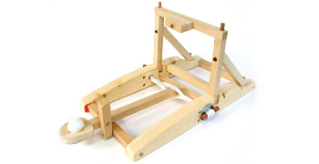

Capella เป็นเครื่องมือ MBSE แบบโอเพนซอร์ที่สร้างแบบจำลองที่ให้แผนภาพหลากหลายประเภท โดยจัดเรียงตามมุมมองทางวิศวกรรม 5 มุมมองที่กำหนดไว้ใน Arcadia.
Capella มีฟังก์ชันการทำงานที่ช่วยให้สามารถปฏิบัติตามวิธีการของ Arcadia ได้อย่างราบรื่น เช่น การเข้าถึงกิจกรรมวิธีการที่มีบริการให้ใช้ทั้งหมด (Activity Explorer) และชุดเครื่องมือเร่งความเร็วในการสร้างแบบจำลองหรือเครื่องมือช่วยกระบวนการทางวิศวกรรมมากมาย ซึ่งช่วยอำนวยความสะดวกในการทำงานประจำวันของวิศวกรระบบ เพื่อให้พวกเขาสามารถมุ่งเน้นไปที่การออกแบบแทนที่จะต้องเสียเวลาไปกับการบำรุงรักษาแบบจำลอง
Capella เป็นเครื่องมือที่ออกแบบมาโดยคำนึงถึงแนวทางปฏิบัติและข้อกังวลในปัจจุบันของวิศวกรระบบ Capella ช่วยให้วิศวกรระบบสามารถกำหนดสถาปัตยกรรมของตนได้อย่างรวดเร็ว เนื่องจากเครื่องมือนี้จะแนะนำพวกเขาผ่านวิธีการที่กำหนดโดย Arcadia
Capella ถูกใช้งานทั่วโลกโดยทีมวิศวกรหลายร้อยทีมในหลากหลายอุตสาหกรรม (เช่น การบินและอวกาศ การป้องกันประเทศ พลังงาน การขนส่ง อุปกรณ์ทางการแพทย์ โทรคมนาคม เป็นต้น)
นอกจากนี้ยังมีกลุ่มผู้เชี่ยวชาญและผู้ให้บริการด้านเทคโนโลยีจำนวนมากที่ให้การสนับสนุนและพัฒนาส่วนเสริมของเครื่องมือนี้
Arcadia เป็นวิธีการทางวิศวกรรมระบบโดยใช้แบบจำลอง เพื่อใช้ในการกำหนด วิเคราะห์ ออกแบบ และตรวจสอบความถูกต้องของการออกแบบสถาปัตยกรรมระบบ ฮาร์ดแวร์ และซอฟต์แวร์
โดยได้รับแรงบันดาลใจจากแนวคิดของ SysML ระบบนี้ได้รับการพัฒนาและทดสอบโดย Thales ระหว่างปี 2005 ถึง 2010 ผ่านกระบวนการทำซ้ำซึ่งเกี่ยวข้องกับสถาปนิกด้านการปฏิบัติงานจากทุกกลุ่มธุรกิจของ Thales ทั่วโลก
Arcadia ได้รับการออกแบบโดยคำนึงถึงแนวปฏิบัติและข้อกังวลในปัจจุบันของผู้เชี่ยวชาญด้านวิศวกรรมระบบ โดยมุ่งเน้นไปที่การกำหนด การประเมิน และการใช้ประโยชน์จากสถาปัตยกรรมระบบร่วมกัน
วัตถุประสงค์หลักระดับสูงของพวกเขามีดังนี้:
วิธีการของ Arcadia เน้นที่การระบุความต้องการของแบบจำลองก่อน จากนั้นจึงค่อยหาแนวทางแก้ไข โดยทั้งสองแนวทางนี้จัดเรียงตามมุมมองทางวิศวกรรม 5 ประการ:
ในทุกภาคอุตสาหกรรม (พลังงาน การบินและอวกาศ การขนส่ง อุปกรณ์ทางการแพทย์ ฯลฯ) ลูกค้าต่างต้องการผลิตภัณฑ์ที่ซับซ้อน ชาญฉลาด ปลอดภัย เชื่อมต่อถึงกัน ราคาสมเหตุสมผลและไม่ต้องการมีค่าใช้จ่ายที่แพงขึ้นเรื่อยๆ ความต้องการนี้จะสร้างความซับซ้อนมากขึ้นเรื่อยๆ โดยมีส่วนประกอบจำนวนมาก รวมถึงการมีส่วนร่วมของสาขาวิศวกรรมที่หลากหลาย ในวิธีการแบบดั้งเดิมที่ใช้เอกสารเป็นหลัก ระบบจะถูกอธิบายด้วยชุดเอกสารที่แตกต่างกัน โดยส่วนใหญ่เป็นเอกสารข้อความ ซึ่งก่อให้เกิดความท้าทายในการรักษาความสอดคล้องในคำจำกัดความของผลิตภัณฑ์
เพื่อรับมือกับความท้าทายและปัญหาความซับซ้อนนี้ สถาปนิกจำเป็นต้องเปลี่ยนจากการใช้แนวทางการออกแบบระบบแบบเอกสาร ไปสู่การอธิบายระบบทั้งหมดอย่างสอดคล้อง ครบถ้วนด้วยระบบดิจิทัล แนวทาง MBSE ใช้แบบจำลองดิจิทัลและวิธีการที่เป็นทางการเพื่อให้วิศวกรระบบสามารถมองเห็นภาพผลิตภัณฑ์และสถาปัตยกรรมระบบ และรับประกันความสามารถในการตรวจสอบย้อนกลับและความสม่ำเสมอ ซึ่งจะช่วยลดความไม่สอดคล้องกันและอำนวยความสะดวกในการ แตกประกอบ ประกอบกลับ บูรณาการต่างๆ โดยการระบุความไม่เข้ากันระหว่างส่วนประกอบตั้งแต่เนิ่นๆ ซอฟต์แวร์ MBSE จึงมีความจำเป็นมาก เพราะทำหน้าที่อำนวยการสร้างแบบจำลองและแปลงแบบจำลองเหล่านี้ให้เป็นดิจิทัล ซึ่งช่วยให้สามารถบูรณาการและดำเนินการกิจกรรมต่างๆ ในรูปแบบดิจิทัลได้อย่างอัตโนมัติ
ซอฟต์แวร์ MBSE จึงมีความจำเป็นมาก เพราะทำหน้าที่อำนวยการสร้างแบบจำลองและแปลงแบบจำลองเหล่านี้ให้เป็นดิจิทัล ซึ่งช่วยให้สามารถบูรณาการและดำเนินการกิจกรรมต่างๆ ในรูปแบบดิจิทัลได้อย่างอัตโนมัติ ด้วยการนำ Arcadia ซึ่งเป็นวิธีการที่ได้รับการพิสูจน์แล้วในด้านนี้มาใช้ร่วมกับ Eclipse Capella™ จึงเป็นเครื่องมือ MBSE ที่สนับสนุนแนวคิดเหล่านี้
หลักสูตรประกอบด้วยวิดีโอ 41 ตอน
เพื่อเรียนรู้ Capella และ MBSE
โดย โทนี่ โคมาร์ (ซีเมนส์)

ตัวอย่างง่ายๆ เพื่อให้เข้าใจ
วิธีการใช้งาน Capella
โดย Ugur Arikan และ Peter Jackson (มหาวิทยาลัยเทคโนโลยีและการออกแบบแห่งสิงคโปร์)
{kind=link}